"A Wonderful Trip Is About To Start" -- DJI
This writeup documents the misuse of the "Get It On Google Play" image by DJI. The misuse was reported to Google, and has not yet been corrected. Four main topics are explored:
An excited pilot buys their new DJI drone! To use their drone, they'll need to install the "DJI Go" Android or iPhone application on their mobile device, register, update firmware, and so on before that shiny new drone can ever take off.
DJI gives many ways for a pilot to install the necessary DJI Go mobile app:
DJI drone pilots who install the DJI Go app directly from the Play or App store are not the focus of this article. But how about the pilot that clicks or taps on that welcoming "Get It On Google Play" image on their drone model's DJI downloads page?
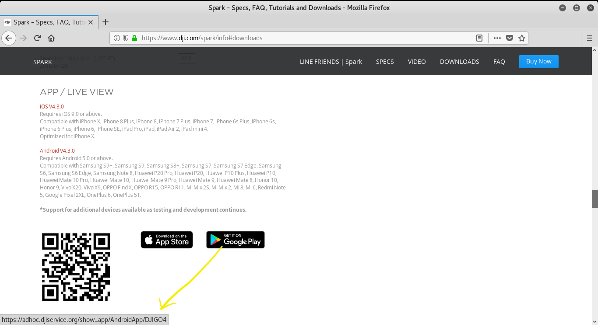Hey wait! That link in the status bar isn't Google Play if we hover over the "Get It On Google Play" image! Well, maybe DJI forwards pilots to Google Play when they click or tap on it, let's try.
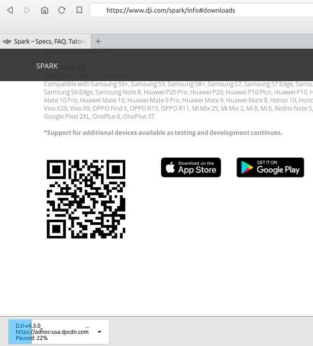 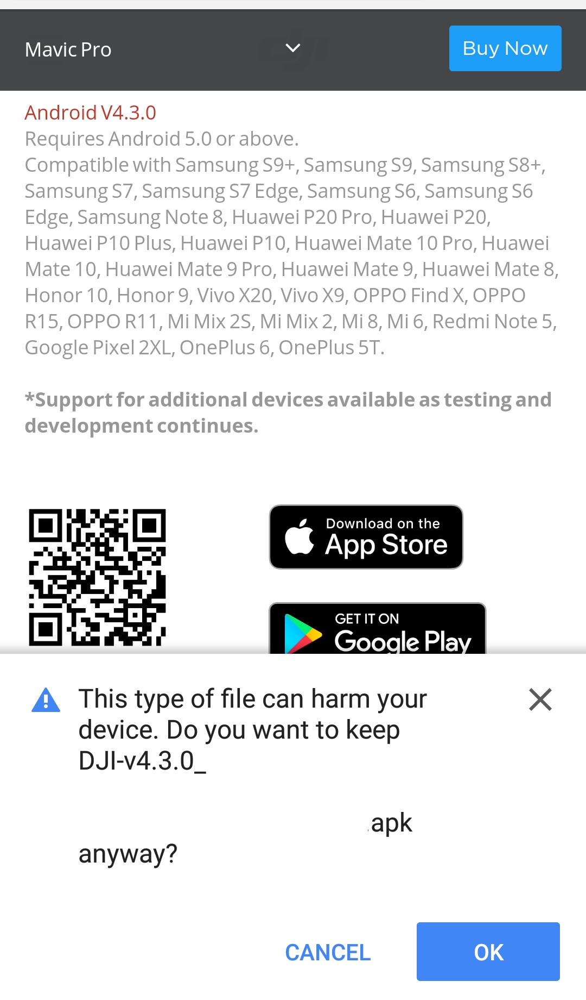Clicking on the link downloads the APK from Google Play? Not so much. Clicking on the link downloads the DJI Go Android app directly from DJI's servers - not from Google Play. The intent here isn't for people to be clicking on the "Get It On Google Play" image in browsers, but rather tapping on the safe looking "Get It On Google Play" via their Android devices.
Let's have a look at that URL hiding behind the mask of "Get It On Google Play": https://adhoc.djiservice.org/show_app/AndroidApp/DJIGO4. We'll pretend we are an Android device by sending an Android user agent header in cURL.
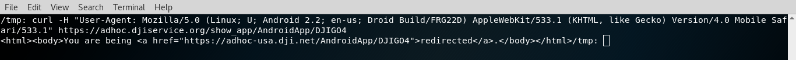OK, the first URL redirects to a second URL, https://adhoc-usa.dji.net/AndroidApp/DJIGO4. Let's check this second URL out.
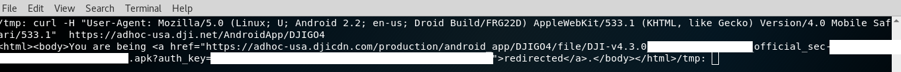Ater a few redirects, we've ended up not at Google Play, but rather adhoc-usa.djicdn.com, requesting a very long named APK file from an endpoint that requires an auth key query string parameter. The APK in the URL does denote "4.3.0", which is the current version of the DJI Go Android application in Google Play at the time of this writing. Let's hit this URL and see if we finally receive the APK.
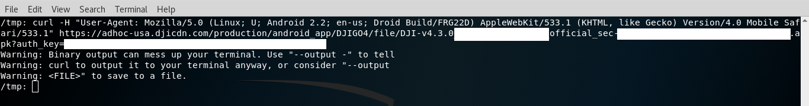Looks like an Android app APK file! Let's confirm with the "xxd" command.
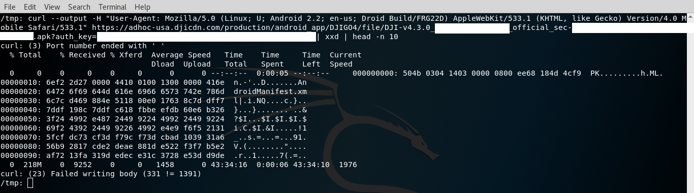Yep. That's definitely an APK file direct from DJI, and not from Google Play.
But wait, there's more ways to get the DJI Go mobile application than just the "Get It On Google Play" image! Don't forget that QR code we saw on a DJI drone model page https://www.dji.com/spark/info#downloads. What is that QR code? Let's run the QR code through an online QR code scanner at https://webqr.com.
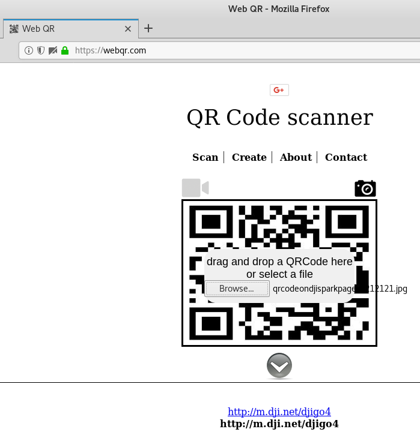The QR code is a URL: http://m.dji.net/djigo4. Given the URI has "djigo4" in it, looks like it's another download. Let's check it out.
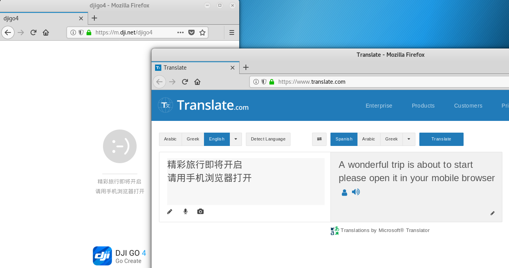"A wonderful trip is about to start". This doesn't feel very wonderful. Looks like we need to change the user agent again, as DJI is telling us to open this URL in a mobile browser.
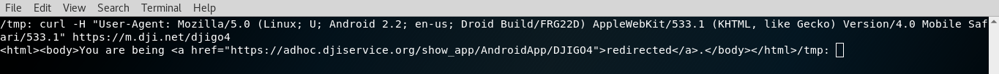A redirect to https://adhoc.djiservice.org/show_app/AndroidApp/DJIGO4 again. We know where this goes - a download of an APK directly from DJI again, instead of a redirect to Google Play.
At this point in the writeup, iPhone & iPad fans may be feeling left out, so lets give them some attention and hit this QR code with a user agent pretending to be iOS instead of Android.
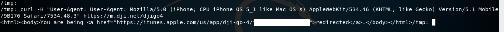The DJI URL to download the DJI Go 4 mobile application for iOS redirects to the app store; iPhone & iPad users are safe. Apple doesn't normally let iPhone & iPad users sideload random apps from unknown sources. Isn't it interesting how if we send in a user agent for iPhone or iPad to the DJI QR code url, we get taken to the proper place to go - and if an Android user agent is sent in, the sideload APK gets returned directly from DJI, rather than Google Play? Its as if someone intentionally designed the DJI website to work this way.
Perhaps there will not be any tomfoolery with the user manual, that's another avenue pilots can get the required DJI Go mobile app.
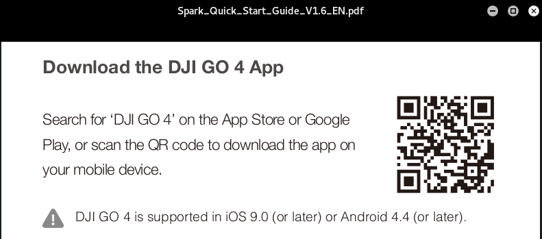The QR code in the manual is the same QR code we found on DJI's website, so pilots using the QR code in the manual on Android will be redirected to download an Android app that is not from Google Play.
Per the manual: "Search for 'DJI GO 4' on the App Store or Google Play, or scan the QR code to download the app on your mobile device". Well at least the manual doesn't misdirect as much as DJI's website does with a "Get It On Google Play" image, but this statement in the user manual for the drone isn't being completely straightforward: sure you "download" the DJI Go 4 app, but it isn't from Google Play.
The final place a new pilot can sometimes find a way to get the DJI Go mobile app is on their drone, with a QR code. One drone model was tested, and a QR code led back to the dji website for the model of drone. Following links on the DJI website for that drone model eventually leads back to the URI /info#download - and the image that states "Get It On Google Play". Numerous different DJI drone models' QR codes physically present on drones were not tested.
The misuse of the "Get It On Google Play" image on DJI's website was reported to Google.
The issue was marked as "Intended Behavior". The response given by Google was "an internal team was informed about the issue":
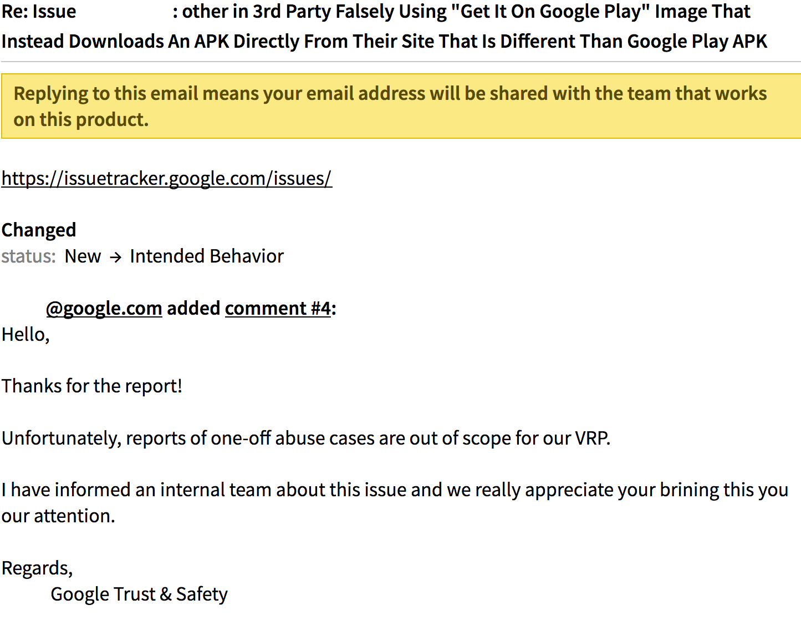30+ days after reporting to Google, the "Get It On Google Play" image that redirects to direct downloads of the DJI GO APK remains on DJI's sites.
At this point in the writeup, some will quip "Big deal, its an Android application that gets downloaded directly from DJI instead of Google Play, same app, so who cares."
Actually, the DJI Go 4 Android app downloaded directly from DJI is not the same app as on Google Play.
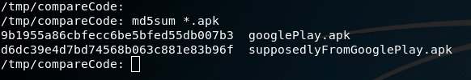The md5sum of the two APKs isn't the same. Again, devils advocates shall argue the contents of the APKs may be the same. Let's see!
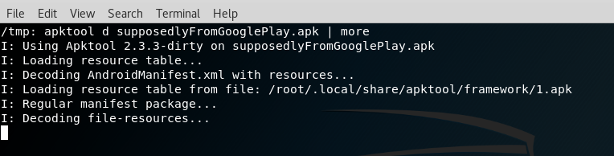An APK file is really just a zip file, however some resources inside the APK file are in binary format. Those binary resources can be transformed to text using the tool "apktool". Another tool, "Meld", can be used to graphically compare two directories. We'll use apktool on an APK from DJI and an APK file from Google Play, and compare using Meld.
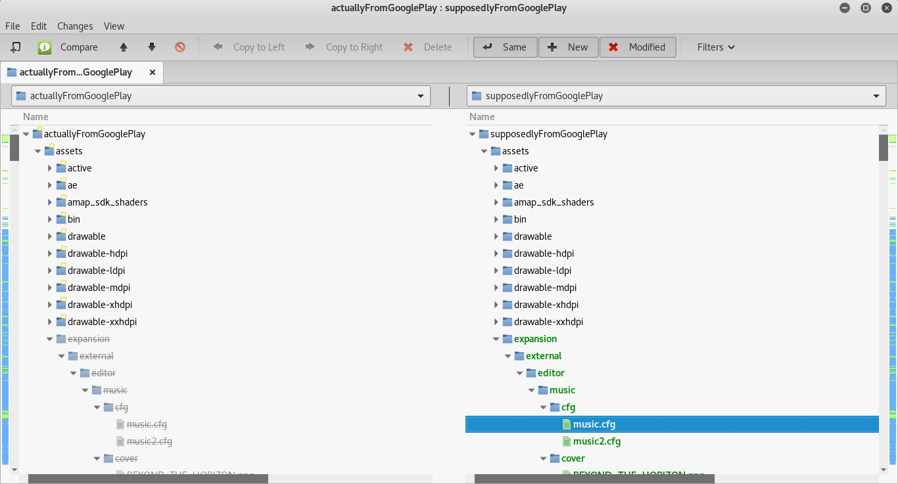At first glance, there are definately differences between DJI's apk, and Google Play's apk. Configuration files are present in the DJI version that aren't in Google Play's version. Let's make sure we're comparing apples to apples.
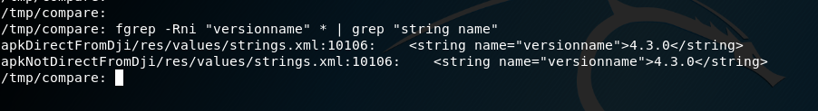Well, the "versionname" of the app is the same in both APK files - 4.3.0. So it appears we're comparing the same version of the DJI application, one direct from DJI, and one from Google Play. What else is different?
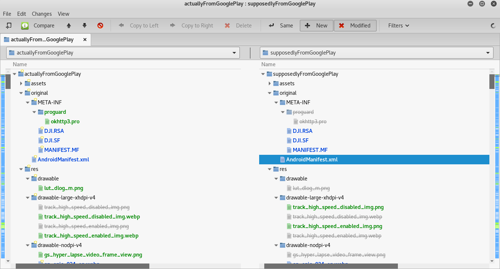A number of differences. Image files that exist in the google play APK, don't exist in the DJI apk. Image file formats of png are sometimes webp format. An okhttp3 pro file that exists in version of the apk, and not another. Also, the MANIFEST.MF file is different?
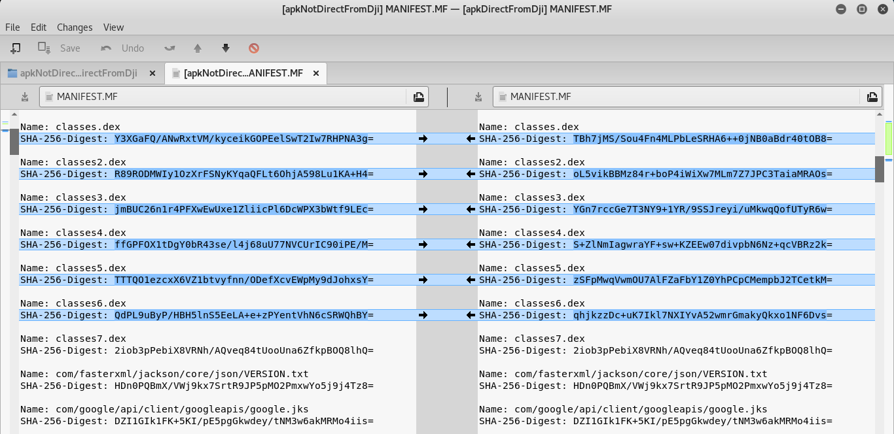Comparing the MANIFEST.MF, a number of classes.dex files are different, but not all of them. A classes.dex file is where the Java source code for Android applications are stored. Thus, the MANIFEST.MF file is implying with the different hash values of the dex files that the source code between the direct download DJI Go Android application, and the Google Play version of the DJI Go Android application, are different.
Let's explore and see if the source code is truly different between Google Play's version of the DJI Go 4 android application, and DJI's direct download version of the DJI Go 4 android application. We'll decompile the dex files inside the APK using tools such as dex2jar and CFR. Post decompilation, let's compare again using the graphical meld tool.
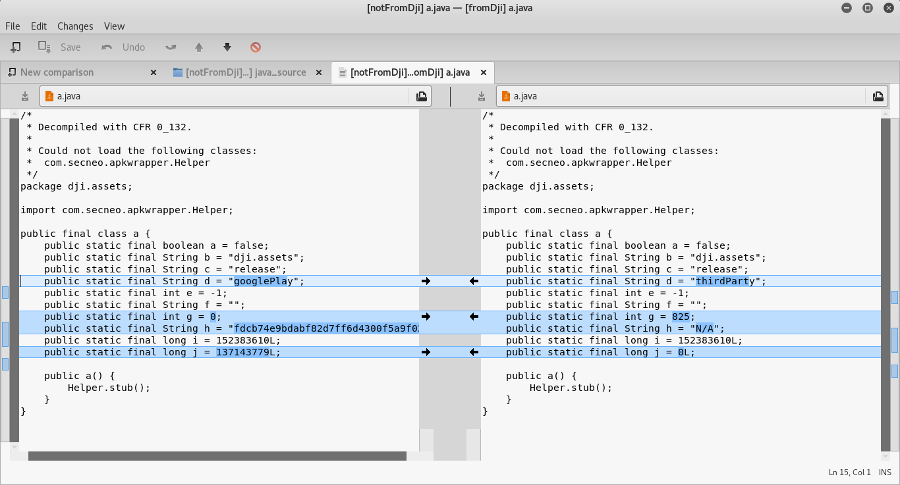There's definately some differences between the source code of the two different APKs. In one APK, a variable is defined as "googlePlay", and in the other APK that same variable is defined as "thirdParty". That really makes it sounds like there are two intentionally different builds made for distrubtion by DJI - one for Google Play, and one not for Google Play.
Why are there different values for variables between the two APKs for the other variables? 0 vs 825? "N/A" vs a long string? 137143779 vs 0? Hmmm. Let's take a look at a different decompiled class.
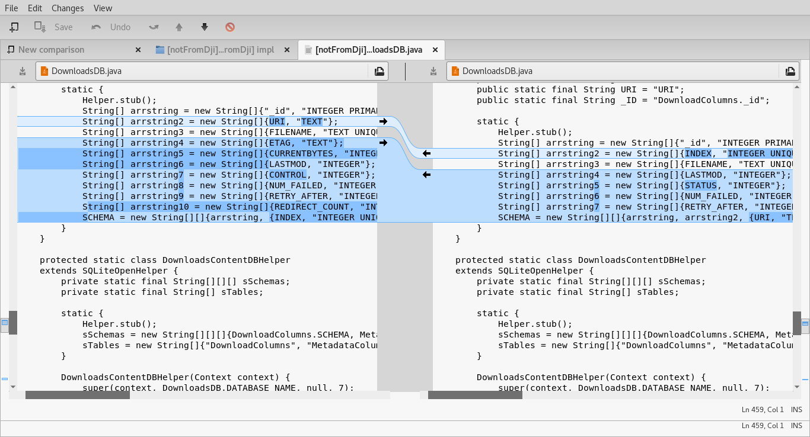More differences in a file named DownloadsDB.java. What's being done here? Also, what license is this open source library file covered by?
There are more differences if the source is compared between the two APKs. The point of this writeup isn't an exhaustive comparison of reverse engineered source between DJI's APK and Google Play's APK - only enough to prove that differences exist. Differences that haven't been verified as secure per Google, or pass Google Play's requirements for applications.
How long has this Google Play misdirect been going on?
Per Wayback Machine, at least May of 2017.
https://web.archive.org/web/20170528212817/https://www.dji.com/spark/info
https://web.archive.org/web/20170620171913/https://dl.djicdn.com/downloads/Spark/20170526/DJI+GO+4+Android.apk
For how many drone models does this Google Play misdirect exist?
Most popular DJI drone models. You can find the "Get it on Google Play" misdirection on the following DJI drone model pages:
How many DJI customers have been misdirected into sideloading the DJI Go Android application, thinking they installed the DJI Go application from Google Play?
Unknown. This figure could be assumed or derived by web analytics of the download URLs in question.